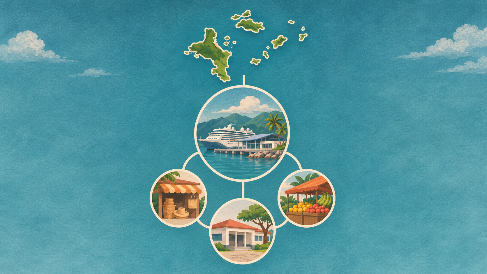

Indian Ocean · tourism · 18 November 2026
Seychelles pushes cruise tourism toward higher value, lower impact.
For the 2026–2027 season, officials are emphasizing local business participation and managed growth as the island nation weighs cruise income against environmental and social costs.

What We Know
The Seychelles News Agency reported that the 2026–2027 cruise season is being framed around higher-value visits and measures intended to ensure more passenger spending reaches local businesses. Tourism Seychelles says the country’s first dedicated cruise-tourism strategy is intended to balance economic, social and environmental considerations.
Why It Matters
The policy question is not only how many ships arrive, but how much value stays with Seychellois businesses and what ecological and community pressures follow.
What We’re Watching
- Final strategy language and implementation dates.
- Passenger-spend and local-business participation measures.
- Capacity limits and reporting on environmental and social costs.